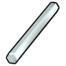
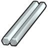
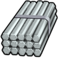

钛铁合金Plasteel
代钢级可塑成品 986 件:家具建筑674 · 防具142 · 穿戴件40 · 近战工具106 · 远程武器7 · 其它17
金属全谱467 + 常规硬性件324 + 重机电(舱体/发电机/扫描仪)140 + 飞船构件+persona武器51
顶替 整档替到 代钢级·中世纪·青铜(940 件基准,含其下全部金属);比钢 +46/−1 件 —— 做不了 无菌瓦屋顶;钢做不了它能做 monosword、“宙斯”级涡轮机…
① 起点 · Core 的 Defs 写 Things/Item/Ingot (160,178,181)


② Vile 换成 Things/Item/Material/DualPhaseTitanium (243,255,255) ← Plasteel_Patch.xml



③ 生效(终态) Things/Item/Ingot (160,178,181) ← 10_Vile贴图还原.xml


Things/Item/Ingot StackCount (160,178,181)(243,255,255)被13条配方消耗贴图链 3 段
护甲 1.60/1.40/0.17 利钝 1.28/1.15 价值 45 质量 0.25 Bulk 0.35
stuff CorrosionResistant, LightMaterial, Metallic, RuggedMetallic, SolidMetallic, StrongMetallic
HSK USLDBar, SuperBar, LightBar
产自 Make Dual-Phase Titanium x25(电弧熔炉/Metal processing V) ; smelt weapon crate(电力锻造台, 电弧熔炉) ; Smelt ferrotitanium alloy(无工作台)
源 Core_SK + 游戏本体
Items_Resource_Alloys_Hightech.xml ; Items_Resource_Stuff.xml